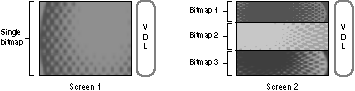
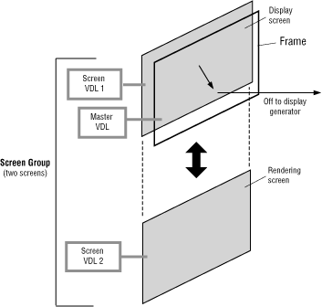
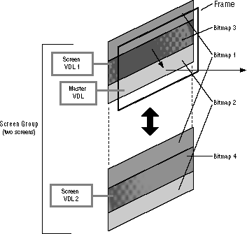

Setting up a frame on a 3DO system is primarily a matter of creating a VDL that sets the proper graphics context for the frame contents. That's why many of the graphics function calls create and modify the VDL either directly or indirectly. Because the VDL can-if set up incorrectly-crash the system, Portfolio takes over all responsibility for the master VDL. A user task can create its own VDL with a graphics function call; the VDL is submitted to Portfolio, which reads it, analyzes its information and commands, and then either accepts the VDL or rejects it for errors. Once accepted, the VDL is copied into system RAM, where it is assigned an item number. This VDL is called a screen VDL (the name is explained later in this chapter).
A task can create more than one screen VDL, and multiple tasks can each create their own screen VDLs, so the system can contain many screen VDLs. Portfolio uses these screen VDLs to create the master VDL. It can use one screen VDL at a time, switching from one to the other to display different frame contents, or it can combine screen VDLs in the master VDL to display parts of multiple images in a single frame.
When a task requires a screen, it uses a single graphics call (CreateScreenGroup()) to create the screen. The call specifies a standard screen; Portfolio creates the appropriate VDL and bitmap for the screen, and the task then proceeds to write into the screen. If the task requires a special screen, it can use the same call to specify a custom VDL, to set a screen size less than 240 lines high, and to create one or more custom bitmaps to place in the screen. You'll find details later in this chapter.
Although a screen typically uses only a single bitmap, it can use two or more bitmaps if it wishes to divide itself into discrete horizontal bands as shown in Figure 1. The screen specifies where each bitmap is positioned.

Figure 1: Positioning of bitmaps.
A screen has a single VDL and one or more bitmaps. Screen 1 on the left is a typical screen with a single bitmap. Screen 2 on the right is an exotic version with three bitmaps.
A bitmap can stretch 320 pixels across, exactly filling the screen width, or it can be more narrow or wider than the screen. A bitmap wider than 320 pixels will have its right most columns truncated; a bitmap narrower than 320 pixels will be set flush against the left edge of the screen, leaving columns of 000 pixels in the right side of the screen.
A screen divided into two or more bitmaps can restrict cel projections to specific bitmaps, and can also restrict double-buffering (as explained later) to specific bitmaps to reduce processing time.
A screen group provides a screen VDL for each of its screens. When a task switches display from one screen in the group to another screen, Portfolio takes the new display screen VDL and incorporates it into the master VDL in place of the previous display screen VDL.
To present a stereoscopic 3-D image, Portfolio swaps between two images (one for the left eye and one for the right eye) 60 times a second. An interlaced video signal doesn't present more than 30 frames per second, so 3DO divides each frame into its two component fields and presents one stereoscopic image in the odd field and the other stereoscopic image in the even field.
Portfolio doesn't require a special screen group for stereoscopic 3-D; a task can put its left and right images in a standard screen group. The function call that displays the screen group determines whether the group is displayed by field (60 times a second for stereophonic 3-D) or by frame (30 times a second). If the group is displayed by field, two screens effectively appear on the display simultaneously.
To create double-buffered stereoscopic animation, a screen group needs at least three but usually four screens so that the task can render into an undisplayed screen while two other screens are displayed.
When Portfolio prepares the master VDL for a frame containing multiple screen groups, it works one line at a time. It looks to see which part of which screen group shows at each line, and uses the appropriate information from the visible screen's VDL to create a line entry (if necessary) for the master VDL. The master VDL can then switch palettes, color sets, and VRAM pointers from line to line to display the visible sections of the multiple screen groups.
The screen group and its independent positioning is a very useful tool in the frame environment. A task doesn't need to concern itself with the screen group's position in the frame when the task draws to a screen-it simply sees the screen as an independent canvas for drawing, and isn't concerned if the screen group is moved so that part of it is hidden above or below the frame boundaries, or is covered by another screen group.
The screen group offers another advantage when it comes to changing its position in the frame: all the screens within the screen group (if there are more than one) move with the group. The task doesn't have to set individual screen positions for all the screens in a group.

Figure 2: The standard double-buffered screen group configuration.
A few graphics tasks opt for complexity to suit their specific needs. For example, a flight simulator may need to split its screens into three bitmaps as shown in Figure 3: a middle band for the constantly changing view from the cockpit, and the top and bottom bands for slowly changing cockpit controls. It uses a screen group with two screens. Screen 1 and screen 2 both specify the same top bitmap and the same bottom bitmap (their VDLs both point to the same buffer). They specify separate bitmaps as the middle bitmap. When the task swaps between the screens, the top and bottom bitmaps don't change because both screens point to the same bitmaps. The middle bitmap does change, though, because the VDL of each screen points to a different bitmap. This kind of screen segmentation reduces the VRAM required for double-buffering.

Figure 3: Screen group.
A complex screen group configuration provides three bitmaps per screen with double-buffering set only for the middle bitmap (bitmaps 3 and 4 alternate in Figure 3). Cel projection can be limited to the middle bitmap or can extend to the entire screen.
Multiple bitmaps on a screen also help confine cel projection to certain parts of the screen. One cel projection call (DrawCels()) specifies to which bitmap within a screen you'd like to project. In a flight simulator, you can project outside object cels (such as other flying planes) only on the middle bitmap. If the cels move beyond the bitmap's boundaries, they're clipped. Another call (DrawScreenCels()) projects a all of a screen's bitmaps to hit the entire screen. For example, you may want to project a cel of smoke filling the cockpit onto the entire screen.